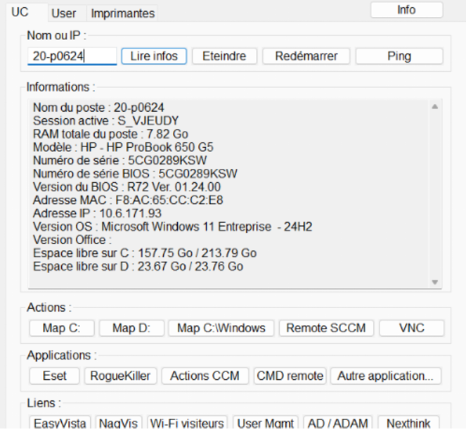
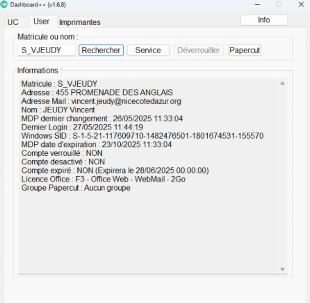
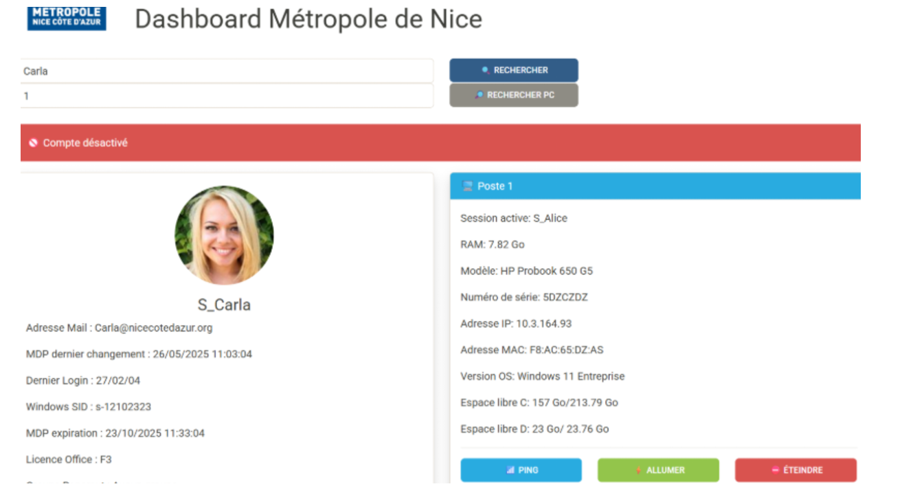
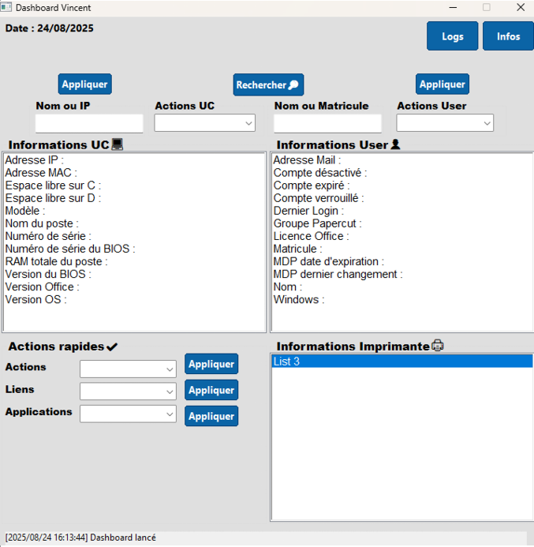
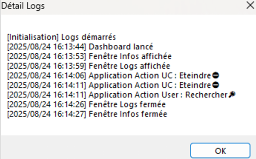
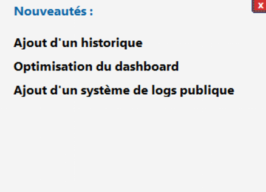

Dashboard Métropole
État actuel
Voici le dashboard utilisé par la Métropole avant mon arrivée. Il est composé de trois pages : UC, USER et Imprimante.


Ma mission
Proposer une refonte, optimiser l’interface et contribuer à l’ajout de fonctionnalités.
Premier test en Python
Voici le premier test format web et codé en Python que j'ai pu effectuer :

Optimisation avec AutoIt
Pour des raisons de performance, j’ai choisi AutoIt. J’ai proposé un design plus clair et des améliorations fonctionnelles :



Dashboard optimisé
J’ai proposé un dashboard en une seule page au lieu de trois. Des fonctions ont été ajoutées, dont un système de logs et un bouton « infos » pour les mises à jour récentes.
Dashboard — Avant / Après
Comparatif de l’interface : avant optimisation et version finale.
Tester la version finale
Vous pouvez télécharger l’exécutable pour voir la version finale du dashboard.